Edita tu video. Haz tu música.Edit your video. Make your music.
Beethoven Craft junta un editor de video (Movie) y un estudio de música (DAW) que comparten sus plugins. Libre, sin cuenta, y en tu computadora. Beethoven Craft brings together a video editor (Movie) and a music studio (DAW) that share their plugins. Free, no account, on your own computer.
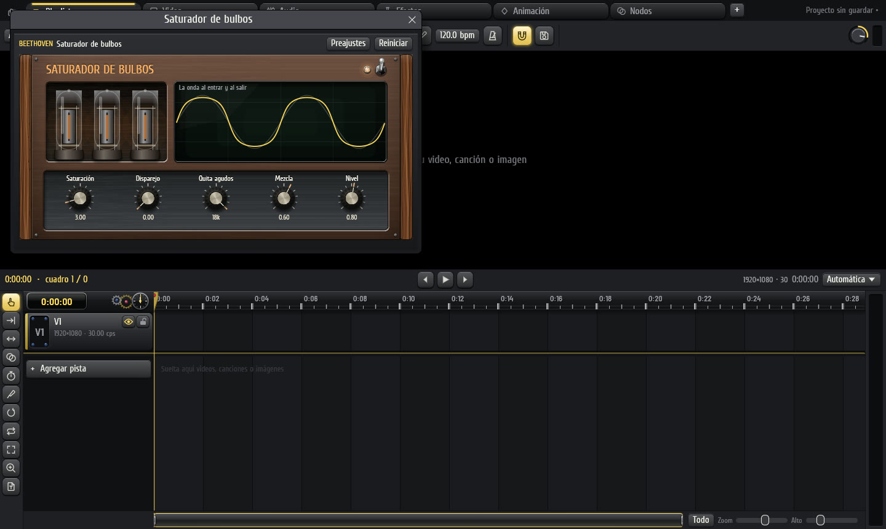
Dos programas, una sola raízTwo programs, one root
Los efectos de sonido del DAW se usan también en Movie, con la misma ventana y el mismo motor: suenan igual al reproducir y al exportar.The DAW's audio effects work inside Movie too, with the same window and engine: they sound the same while playing and when exporting.
Editor de videoVideo editor
Línea de tiempo con clips de cristal, capas, animación con llaves y nodos de efectos.Timeline with glass clips, layers, keyframe animation and effect nodes.
- Velocidad en el clic derecho: −50 % es cámara lenta.Speed on right-click: −50% is slow motion.
- Transiciones propias: corazón, telón, tinta, humo, rayo y panal.Our own transitions: heart, curtain, ink, smoke, lightning and honeycomb.
- Exportar para Discord: nunca pasa de 10 MB.Export for Discord: never over 10 MB.
Estudio de músicaMusic studio
Playlist, patrones, piano roll y Mixer con piel de metal y relojería.Playlist, patterns, piano roll and a Mixer with a metal, watchmaker look.
- Curva y tirador de volumen en cada audio.Volume curve and gain handle on every audio clip.
- Grupos plegables y clases con efectos compartidos.Foldable groups and classes with shared effects.
- Editor de audio, sintetizadores y muestreador.Audio editor, synthesizers and sampler.
48 efectos analógicos48 analog effects
Bulbos, cinta, compresor, ecualizador, reverb de convolución… con ventanas que se mueven con el audio real.Tubes, tape, compressor, EQ, convolution reverb… with windows that move with the real audio.
- También como VST3 y CLAP para otros programas.Also as VST3 and CLAP for other hosts.
- Haz los tuyos en Lua: suelta el archivo y funciona.Make your own in Lua: drop the file in and it works.
CapturasScreenshots
Haz clic en una para verla grande.Click one to see it full size.
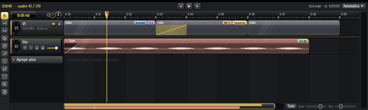
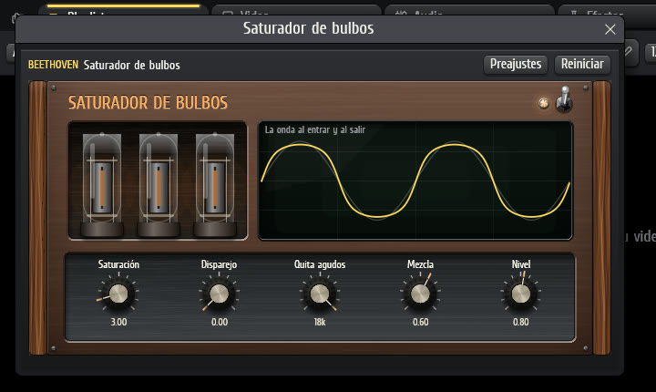
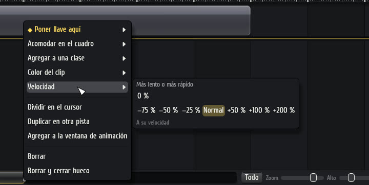
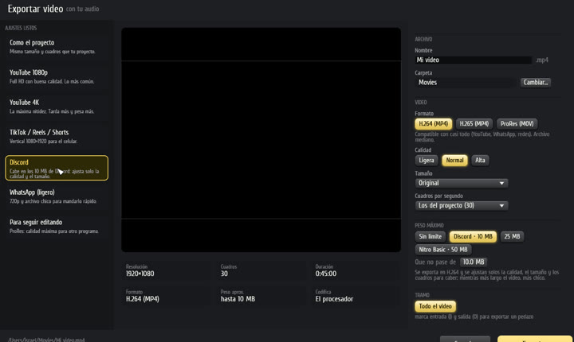
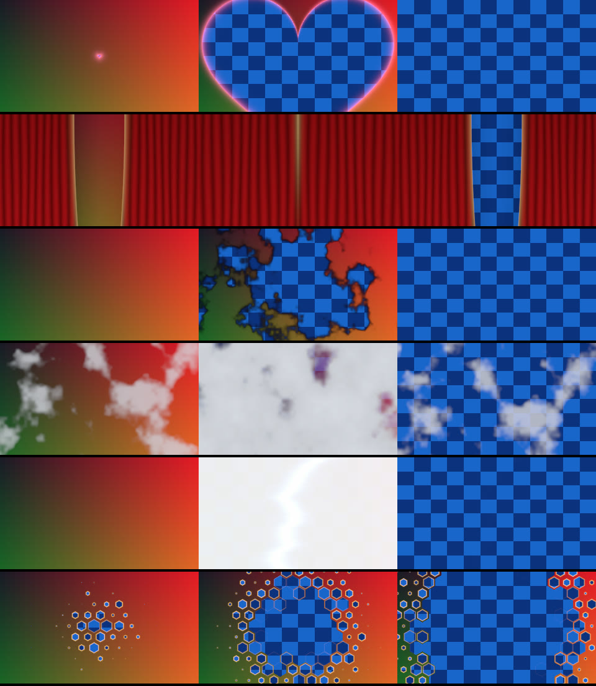
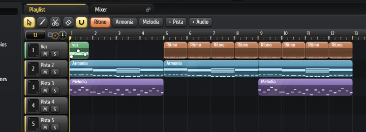
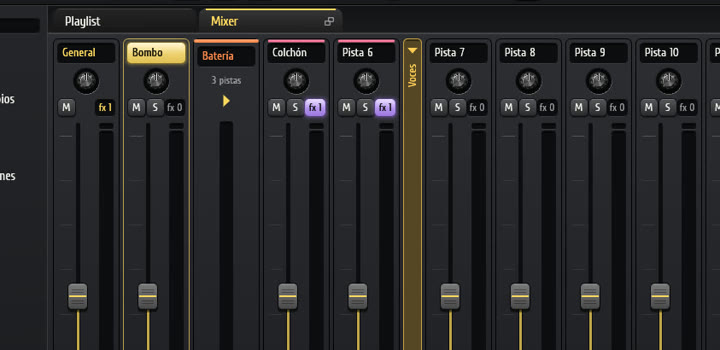
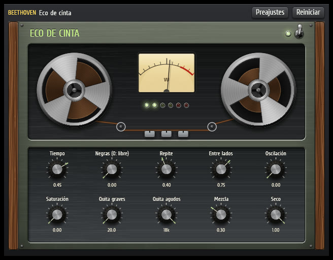
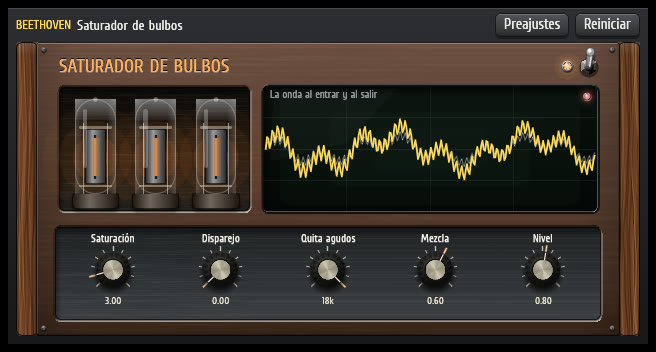
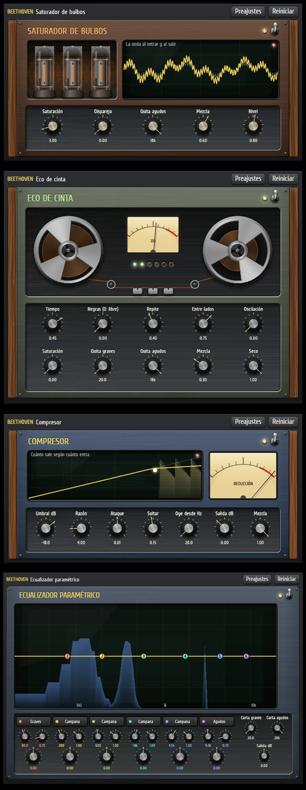
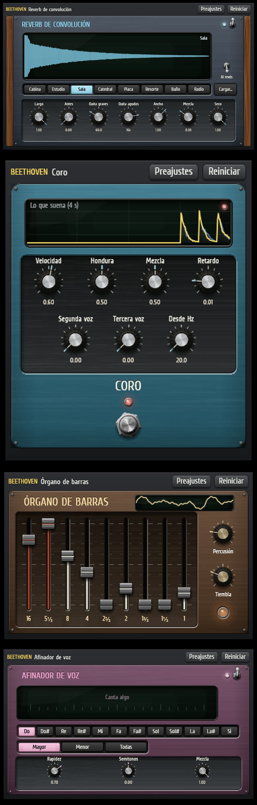
DescargarDownload
La última versión, directo de GitHub. La app se actualiza sola cuando sale otra.The latest version, straight from GitHub. The app updates itself when a new one comes out.
Mac
Apple Silicon (zip)Apple Silicon (zip)Arrastra «Beethoven Craft.app» a Aplicaciones. La primera vez ábrela con clic derecho → Abrir. Necesita ffmpeg: brew install ffmpegDrag “Beethoven Craft.app” to Applications. The first time, open it with right-click → Open. Needs ffmpeg: brew install ffmpeg
Linux
x86-64 (tar.gz)x86-64 (tar.gz)Descomprime y abre «beethoven-craft». Necesita ffmpeg: sudo apt install ffmpegExtract and run “beethoven-craft”. Needs ffmpeg: sudo apt install ffmpeg